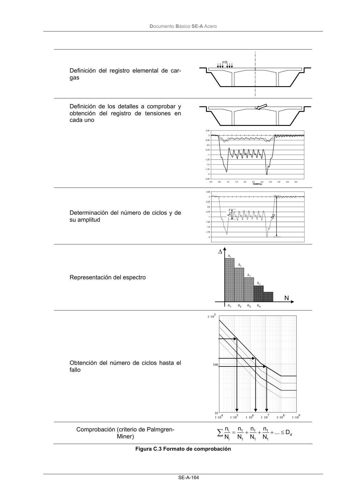

DB-SE-A Acero · edición 2007-10-23 · capa oficial
Documento DB-SE-A-oficial · SHA-256 del PDF 9ed9ea694aabfbda3bfbbef40dfe9223fde05d13c35bc2ba9751e5a96a22a64f
Página física 166 de 168.
Copia fiel del PDF fuente · Fuente oficial
Ficha de la disposición en la fuente oficial
Formato: Texto de la página (Markdown)
Documento Básico SE-A Acero SE-A-164 Definición del registro elemental de car- gas Definición de los detalles a comprobar y obtención del registro de tensiones en cada uno -2,25 -2 -1,75 -1,5 -1,25 -1 -0,75 -0,5 -0,25 0 0,25 0,0 0,5 1,0 1,5 2,0 2,5 3,0 3,5 4,0 4,5 5,0 TIEMPO(s) Determinación del número de ciclos y de su amplitud -2 -1,75 -1,5 -1,25 -1 -0,75 -0,5 -0,25 0 0,25 ∆1 ∆2 Representación del espectro ∆1 n1 ∆2 n2 ∆3 n3 ∆4 n4 N ∆ Obtención del número de ciclos hasta el fallo 1 104 1 105 1 106 1 107 1 108 1 109 10 100 1 103 Comprobación (criterio de Palmgren- Miner) d 1 1 1 1 1 1 i i D ... N n N n N n N n ≤ + + + = ∑ Figura C.3 Formato de comprobación

Datos candidatos: compruebe celdas y notas en el PDF.